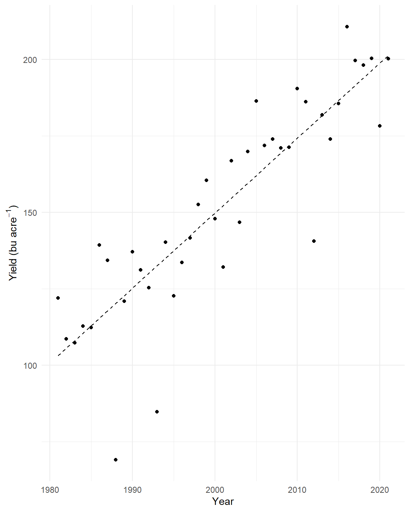
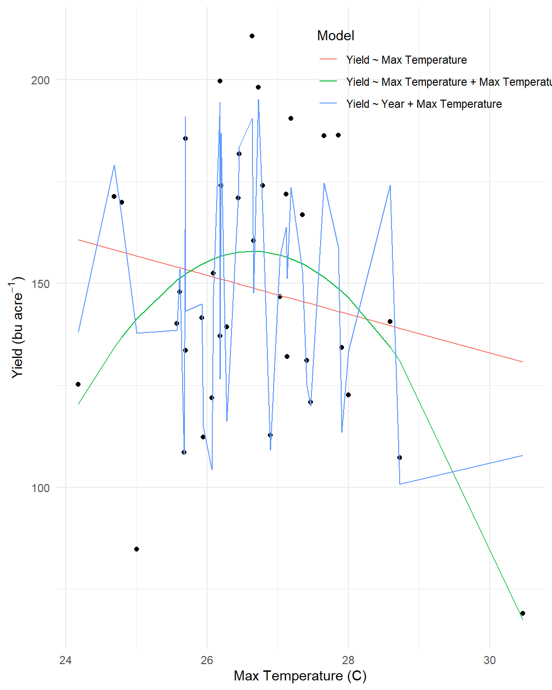
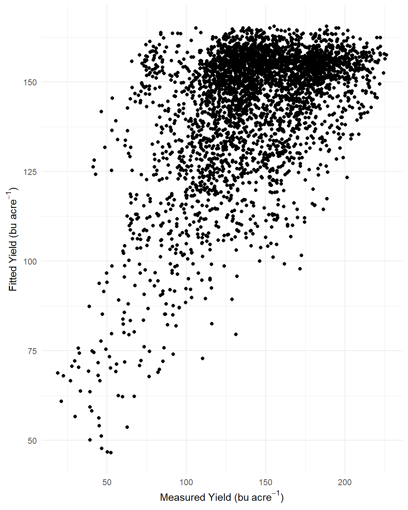
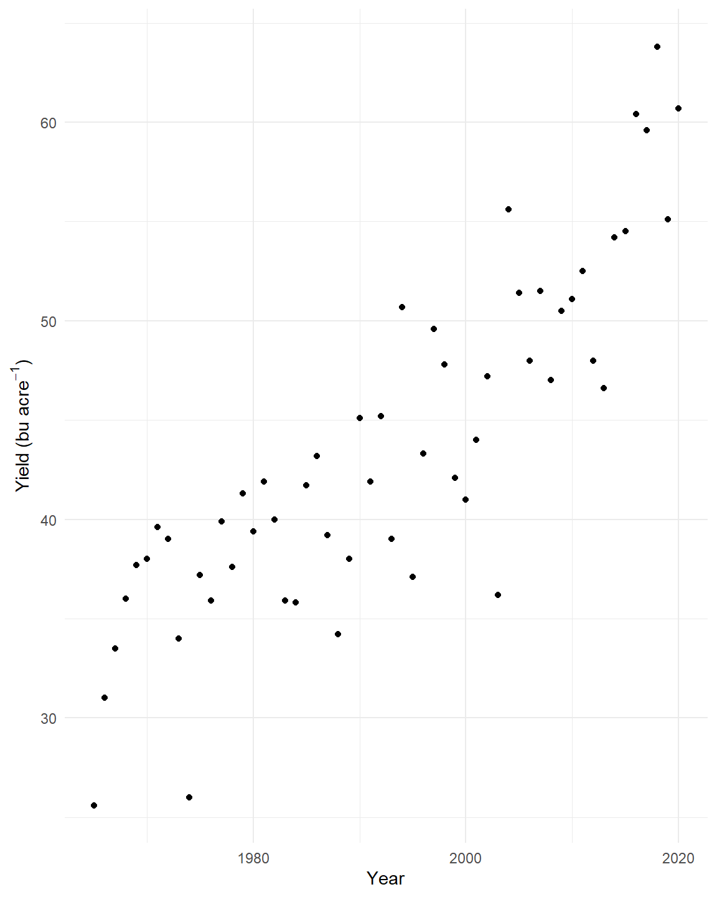

Chapter 5 Chapter 4 - Linear Regressions
5.1 Importing the data and cleaning it up.
prism <- readMat("./Data/Chapter_4/prismiowa.mat")
dimnames(prism$tmaxdaily.iowa) <- list(prism$COUNTYFP, 1:366, prism$years)
tmaxdf <- as.data.frame.table(prism$tmaxdaily.iowa)
colnames(tmaxdf) <- c("countyfp","doy","year","tmax")
tmaxdf <- tibble(tmaxdf)
tmaxdf$doy <- as.numeric(tmaxdf$doy)
tmaxdf$year <- as.numeric(as.character(tmaxdf$year))
winnesummer <- tmaxdf %>%
filter(countyfp==191 & doy >= 152 & doy <= 243) %>%
group_by(year) %>%
summarize(meantmax = mean(tmax))
winnewinter <- tmaxdf %>%
filter(countyfp==191 & (doy <= 59 | doy >= 335) & !is.na(tmax)) %>%
group_by(year) %>%
summarize(meantmax = mean(tmax))
nassqs_auth(key = "11FCF4DC-1B74-3577-B8A5-5F09B27E2390")
params <- list(commodity_desc = "CORN",
util_practice_desc = "GRAIN",
prodn_practice_desc = "ALL PRODUCTION PRACTICES",
year__GE = 1981,
state_alpha = "IA")
cornyieldsall <- nassqs_yields(params)
cornyieldsall$county_ansi <- as.numeric(cornyieldsall$county_ansi)
cornyieldsall$yield <- as.numeric(cornyieldsall$Value)
cornyields <- select(cornyieldsall, county_ansi, county_name, yield, year) %>%
filter(!is.na(county_ansi) & !is.na(yield))
cornyields <- tibble(cornyields)5.2 Question 1a: Extract Winneshiek County corn yields, fit a linear time trend, make a plot. Is there a significant time trend?
winneshiek <- cornyields %>%
filter(county_name == "WINNESHIEK")
winneshiek.lm <- lm(yield ~ year,
data = winneshiek)
summary(winneshiek.lm)##
## Call:
## lm(formula = yield ~ year, data = winneshiek)
##
## Residuals:
## Min 1Q Median 3Q Max
## -51.163 -1.841 2.363 9.437 24.376
##
## Coefficients:
## Estimate Std. Error t value Pr(>|t|)
## (Intercept) -4763.290 448.286 -10.63 4.46e-13 ***
## year 2.457 0.224 10.96 1.77e-13 ***
## ---
## Signif. codes: 0 '***' 0.001 '**' 0.01 '*' 0.05 '.' 0.1 ' ' 1
##
## Residual standard error: 16.97 on 39 degrees of freedom
## Multiple R-squared: 0.7551, Adjusted R-squared: 0.7488
## F-statistic: 120.2 on 1 and 39 DF, p-value: 1.767e-13winneshiek$fitted.yield.lm <- winneshiek.lm$fitted.values
ggplot(winneshiek) +
geom_point(aes(x = year,
y = yield)) +
geom_line(aes(x = year,
y = fitted.yield.lm),
lty = 2) +
ylab(expression("Yield (bu"~acre^-1*")")) +
xlab("Year") +
theme_minimal()
There is a significant time trend (p-value < 0.001). Year explains ~75% of the variability in the yield data. While there are some obvious outliers (e.g., 1993), maize yield tend to increase overtime by a rate of ~2.5 bushels per acre per year.
5.2.1 Question 1b: Fit a quadratic time trend (i.e., year + year^2) and make a plot. Is there evidence for slowing yield growth?
winneshiek <- winneshiek %>%
mutate(year_2 = year^2)
winneshiek.qm <- lm(yield ~ year + year_2,
data = winneshiek)
summary(winneshiek.qm)##
## Call:
## lm(formula = yield ~ year + year_2, data = winneshiek)
##
## Residuals:
## Min 1Q Median 3Q Max
## -51.384 -3.115 1.388 9.743 25.324
##
## Coefficients:
## Estimate Std. Error t value Pr(>|t|)
## (Intercept) 2.583e+04 8.580e+04 0.301 0.765
## year -2.812e+01 8.576e+01 -0.328 0.745
## year_2 7.641e-03 2.143e-02 0.357 0.723
##
## Residual standard error: 17.17 on 38 degrees of freedom
## Multiple R-squared: 0.7559, Adjusted R-squared: 0.7431
## F-statistic: 58.84 on 2 and 38 DF, p-value: 2.311e-12anova(winneshiek.qm)## Analysis of Variance Table
##
## Response: yield
## Df Sum Sq Mean Sq F value Pr(>F)
## year 1 34638 34638 117.5462 3.445e-13 ***
## year_2 1 37 37 0.1271 0.7234
## Residuals 38 11198 295
## ---
## Signif. codes: 0 '***' 0.001 '**' 0.01 '*' 0.05 '.' 0.1 ' ' 1winneshiek$fitted.yield.qm <- winneshiek.qm$fitted.values
ggplot(winneshiek) +
geom_point(aes(x = year,
y = yield)) +
geom_line(aes(x = year,
y = fitted.yield.qm),
lty = 2) +
ylab(expression("Yield (bu"~acre^-1*")")) +
xlab("Year") +
theme_minimal()
In Winnesheiek county, there is no evidence of slowing yield growth for corn. The quadratic parameter is not significant, and does not add explanatory power to the model. If anything, there has been an insignificant but noticible increase in the rate of yield growth in the decade since 2010, implying that yield growth might be increasing.
5.3 Question 2
Time Series: Let’s analyze the relationship between temperature and yields for the Winneshiek County time series. Use data on yield and summer avg Tmax. Is adding year or Tmax^2 to your model helpful? Make a plot and interpret the results.
winneshiek.climate <- cornyields %>%
filter(county_name == "WINNESHIEK") %>%
right_join(.,
winnesummer,
by = "year")
### Linear model
winneshiek.climate.lm <- lm(yield ~ meantmax,
data = winneshiek.climate)
summary(winneshiek.climate.lm)##
## Call:
## lm(formula = yield ~ meantmax, data = winneshiek.climate)
##
## Residuals:
## Min 1Q Median 3Q Max
## -71.96 -19.85 -3.19 24.64 61.72
##
## Coefficients:
## Estimate Std. Error t value Pr(>|t|)
## (Intercept) 275.876 118.335 2.331 0.0255 *
## meantmax -4.763 4.438 -1.073 0.2902
## ---
## Signif. codes: 0 '***' 0.001 '**' 0.01 '*' 0.05 '.' 0.1 ' ' 1
##
## Residual standard error: 32.88 on 36 degrees of freedom
## Multiple R-squared: 0.03101, Adjusted R-squared: 0.004098
## F-statistic: 1.152 on 1 and 36 DF, p-value: 0.2902fitted.values.lm <- winneshiek.climate.lm$fitted.values
### Multiple regression
winneshiek.climate.mlm <- lm(yield ~ meantmax + year,
data = winneshiek.climate)
summary(winneshiek.climate.mlm)##
## Call:
## lm(formula = yield ~ meantmax + year, data = winneshiek.climate)
##
## Residuals:
## Min 1Q Median 3Q Max
## -53.071 -7.269 2.271 9.935 27.505
##
## Coefficients:
## Estimate Std. Error t value Pr(>|t|)
## (Intercept) -4791.774 513.812 -9.326 5.10e-11 ***
## meantmax -3.201 2.308 -1.387 0.174
## year 2.514 0.253 9.934 1.01e-11 ***
## ---
## Signif. codes: 0 '***' 0.001 '**' 0.01 '*' 0.05 '.' 0.1 ' ' 1
##
## Residual standard error: 17.06 on 35 degrees of freedom
## Multiple R-squared: 0.7463, Adjusted R-squared: 0.7318
## F-statistic: 51.48 on 2 and 35 DF, p-value: 3.761e-11fitted.values.mlm <- predict(winneshiek.climate.mlm,
newdata = data.frame(meantmax = winneshiek.climate$meantmax,
year = winneshiek.climate$year))
### Quadratic multiple regression
winneshiek.climate <- winneshiek.climate %>%
mutate(tmax_2 = meantmax^2)
winneshiek.climate.mqm <- lm(yield ~ meantmax + tmax_2,
data = winneshiek.climate)
summary(winneshiek.climate.mqm)##
## Call:
## lm(formula = yield ~ meantmax + tmax_2, data = winneshiek.climate)
##
## Residuals:
## Min 1Q Median 3Q Max
## -56.587 -22.262 -0.982 22.409 52.798
##
## Coefficients:
## Estimate Std. Error t value Pr(>|t|)
## (Intercept) -4223.604 1446.639 -2.920 0.00609 **
## meantmax 328.918 107.068 3.072 0.00410 **
## tmax_2 -6.173 1.979 -3.119 0.00362 **
## ---
## Signif. codes: 0 '***' 0.001 '**' 0.01 '*' 0.05 '.' 0.1 ' ' 1
##
## Residual standard error: 29.5 on 35 degrees of freedom
## Multiple R-squared: 0.2417, Adjusted R-squared: 0.1984
## F-statistic: 5.579 on 2 and 35 DF, p-value: 0.007887fitted.values.mqm <- winneshiek.climate.mqm$fitted.values
###
model.comparison <- tibble(Model = c(rep("Yield ~ Max Temperature", length = 38),
rep("Yield ~ Year + Max Temperature", length = 38),
rep("Yield ~ Max Temperature + Max Temperature^2", length = 38)),
T_Max = rep(winneshiek.climate$meantmax, 3),
Fitted = c(fitted.values.lm,
fitted.values.mlm,
fitted.values.mqm))
###
ggplot(data = winneshiek.climate,
aes(x = meantmax,
y = yield)) +
geom_point() +
geom_line(data = model.comparison,
aes(x = T_Max,
y = Fitted,
color = Model)) +
ylab(expression("Yield (bu"~acre^-1*")")) +
xlab("Max Temperature (C)") +
theme_minimal() +
theme(legend.position = c(0.8,0.9)) There is a significant negative, nonlinear relationship between maximum annual temperature and average yield in Winnesheik county. This trend is best captured by the quadratic mode, which shows that yields rise to a maxima at ~27 degrees C, after which they begin to fall. Further analysis should investigate the interaction between the month during which max temperature was observed and max temerature, as corn growth stage response to temperature may confound results.
Adding year to the model helps to explain some of the variance, but results are significant in either case. Adding yead as a random effect in a mixed model in future analyses may provide even more robust results.
5.4 Question 3
Cross-Section: Analyze the relationship between temperature and yield across all counties in 2018. Is there a relationship? Interpret the results.
climate.yield.data <- tmaxdf %>%
filter(doy %in% seq(152, 243)) %>%
group_by(countyfp,
year) %>%
summarise(Max_Temp = mean(tmax, na.rm = T)) %>%
mutate(Max_Temp2 = Max_Temp^2) %>%
mutate(countyfp = as.numeric(as.character((countyfp)))) %>%
left_join(x = .,
y = cornyields,
by = c("year",
"countyfp" = "county_ansi")) %>%
filter(is.na(yield) == F)## `summarise()` has grouped output by 'countyfp'. You can override using the `.groups` argument.state.level.lm <- lm(yield ~ Max_Temp + Max_Temp2, data = climate.yield.data)
climate.yield.data$Fitted <- state.level.lm$fitted.values
summary(state.level.lm)##
## Call:
## lm(formula = yield ~ Max_Temp + Max_Temp2, data = climate.yield.data)
##
## Residuals:
## Min 1Q Median 3Q Max
## -113.151 -21.982 -2.794 24.860 82.006
##
## Coefficients:
## Estimate Std. Error t value Pr(>|t|)
## (Intercept) -2098.6219 139.4315 -15.05 <2e-16 ***
## Max_Temp 168.9590 9.9402 17.00 <2e-16 ***
## Max_Temp2 -3.1665 0.1769 -17.90 <2e-16 ***
## ---
## Signif. codes: 0 '***' 0.001 '**' 0.01 '*' 0.05 '.' 0.1 ' ' 1
##
## Residual standard error: 31.55 on 3745 degrees of freedom
## Multiple R-squared: 0.1947, Adjusted R-squared: 0.1943
## F-statistic: 452.8 on 2 and 3745 DF, p-value: < 2.2e-16anova(state.level.lm)## Analysis of Variance Table
##
## Response: yield
## Df Sum Sq Mean Sq F value Pr(>F)
## Max_Temp 1 582759 582759 585.34 < 2.2e-16 ***
## Max_Temp2 1 318854 318854 320.27 < 2.2e-16 ***
## Residuals 3745 3728463 996
## ---
## Signif. codes: 0 '***' 0.001 '**' 0.01 '*' 0.05 '.' 0.1 ' ' 1ggplot(data = climate.yield.data,
aes(x = Max_Temp,
y = yield)) +
geom_point() +
geom_line(aes(x = Max_Temp,
y = Fitted),
color = "red",
lty = 2,
size = 1.5) +
ylab(expression("Yield (bu"~acre^-1*")")) +
xlab("Maximum Temperature (C)") +
theme_minimal()
Yes, there is a significant relationship between maximum temperature and corn yields analyzed across all IA counties. When evaluated using a linear predictor, yields decline by ~ 9 bushels per acre per 1 degree increase in max temperature. However, yields decline more rapidly at higher temperatures, and as such a quadratic model is more appropriate for analyzing these data. The variability in yield (likely a function of variability in soil properties, management, and precipitation) lead to the model explaining only 19% of the variability, however the model shows significance for both the maximum temperature term, as well as the quadratic term.
5.5 Question 4
Panel: One way to leverage multiple time series is to group all data into what is called a “panel” regression. Convert the county ID code (“countyfp” or “county_ansi”) into factor using as.factor, then include this variable in a regression using all counties’ yield and summer temperature data. How does the significance of your temperature coefficients (Tmax, Tmax^2) change? Make a plot comparing actual and fitted yields and interpret the results of your model.
climate.yield.data <- climate.yield.data %>%
mutate(county_name = as.factor(county_name))
panel.lm <- lm(yield ~ Max_Temp + Max_Temp2 + county_name, data = climate.yield.data)
summary(panel.lm)##
## Call:
## lm(formula = yield ~ Max_Temp + Max_Temp2 + county_name, data = climate.yield.data)
##
## Residuals:
## Min 1Q Median 3Q Max
## -95.088 -21.438 -3.026 23.570 77.941
##
## Coefficients:
## Estimate Std. Error t value Pr(>|t|)
## (Intercept) -2102.2327 139.2946 -15.092 < 2e-16 ***
## Max_Temp 167.9699 9.8950 16.975 < 2e-16 ***
## Max_Temp2 -3.1324 0.1758 -17.820 < 2e-16 ***
## county_nameADAMS -4.5577 7.0388 -0.648 0.517347
## county_nameALLAMAKEE 1.9797 7.0743 0.280 0.779612
## county_nameAPPANOOSE -19.1369 7.0864 -2.701 0.006955 **
## county_nameAUDUBON 4.3024 7.0416 0.611 0.541240
## county_nameBENTON 6.2752 7.0459 0.891 0.373195
## county_nameBLACK HAWK 6.2028 7.0520 0.880 0.379147
## county_nameBOONE 14.3129 7.0414 2.033 0.042157 *
## county_nameBREMER 10.2595 7.0568 1.454 0.146076
## county_nameBUCHANAN 6.6549 7.0596 0.943 0.345912
## county_nameBUENA VISTA 7.5427 7.0503 1.070 0.284760
## county_nameBUTLER 8.0045 7.0493 1.135 0.256242
## county_nameCALHOUN 9.3627 7.0468 1.329 0.184048
## county_nameCARROLL 8.8039 7.0426 1.250 0.211348
## county_nameCASS 6.0858 7.0389 0.865 0.387315
## county_nameCEDAR 14.9921 7.0443 2.128 0.033381 *
## county_nameCERRO GORDO 3.7400 7.0668 0.529 0.596677
## county_nameCHEROKEE 12.8689 7.0455 1.827 0.067848 .
## county_nameCHICKASAW 1.3837 7.0714 0.196 0.844876
## county_nameCLARKE -24.9874 7.0863 -3.526 0.000427 ***
## county_nameCLAY 5.5213 7.0521 0.783 0.433716
## county_nameCLAYTON 7.9986 7.0648 1.132 0.257632
## county_nameCLINTON 9.7142 7.0455 1.379 0.168043
## county_nameCRAWFORD 5.5829 7.0436 0.793 0.428054
## county_nameDALLAS 10.5962 7.0391 1.505 0.132323
## county_nameDAVIS -14.6474 7.0887 -2.066 0.038872 *
## county_nameDECATUR -16.7641 7.0865 -2.366 0.018051 *
## county_nameDELAWARE 8.6421 7.0667 1.223 0.221435
## county_nameDES MOINES 10.8382 7.0391 1.540 0.123719
## county_nameDICKINSON 2.0837 7.0635 0.295 0.768011
## county_nameDUBUQUE 9.1371 7.0690 1.293 0.196245
## county_nameEMMET 6.4115 7.0706 0.907 0.364579
## county_nameFAYETTE 6.5576 7.0722 0.927 0.353862
## county_nameFLOYD 3.8270 7.0595 0.542 0.587775
## county_nameFRANKLIN 10.2572 7.0536 1.454 0.145983
## county_nameFREMONT 15.9700 7.0526 2.264 0.023608 *
## county_nameGREENE 14.2209 7.0396 2.020 0.043445 *
## county_nameGRUNDY 10.3933 7.0506 1.474 0.140543
## county_nameGUTHRIE 3.0582 7.0392 0.434 0.663988
## county_nameHAMILTON 12.1993 7.0442 1.732 0.083392 .
## county_nameHANCOCK 7.8892 7.0692 1.116 0.264496
## county_nameHARDIN 13.0042 7.0463 1.846 0.065040 .
## county_nameHARRISON 7.0324 7.0390 0.999 0.317828
## county_nameHENRY 5.8050 7.0396 0.825 0.409641
## county_nameHOWARD 0.9492 7.1084 0.134 0.893781
## county_nameHUMBOLDT 8.8848 7.0596 1.259 0.208279
## county_nameIDA 10.8610 7.0456 1.542 0.123276
## county_nameIOWA 6.7101 7.0403 0.953 0.340600
## county_nameJACKSON -2.2777 7.0533 -0.323 0.746768
## county_nameJASPER 13.8935 7.0402 1.973 0.048519 *
## county_nameJEFFERSON 2.1063 7.0445 0.299 0.764958
## county_nameJOHNSON 3.8916 7.0404 0.553 0.580470
## county_nameJONES 6.8541 7.0503 0.972 0.331025
## county_nameKEOKUK 2.4290 7.0390 0.345 0.730052
## county_nameKOSSUTH 11.2195 7.0616 1.589 0.112188
## county_nameLEE 3.2019 7.0439 0.455 0.649452
## county_nameLINN 5.5167 7.0475 0.783 0.433799
## county_nameLOUISA 8.0182 7.0400 1.139 0.254798
## county_nameLUCAS -23.7701 7.1360 -3.331 0.000874 ***
## county_nameLYON 8.4973 7.0446 1.206 0.227815
## county_nameMADISON -2.7616 7.0390 -0.392 0.694843
## county_nameMAHASKA 8.2674 7.0389 1.175 0.240260
## county_nameMARION 2.0919 7.0389 0.297 0.766339
## county_nameMARSHALL 13.1465 7.0469 1.866 0.062181 .
## county_nameMILLS 9.7388 7.1425 1.364 0.172806
## county_nameMITCHELL 6.9486 7.0897 0.980 0.327099
## county_nameMONONA 1.2117 7.0395 0.172 0.863346
## county_nameMONROE -16.6425 7.0863 -2.349 0.018900 *
## county_nameMONTGOMERY 6.6056 7.0404 0.938 0.348183
## county_nameMUSCATINE 8.2715 7.0389 1.175 0.240027
## county_nameO BRIEN 13.1679 7.0506 1.868 0.061894 .
## county_nameOSCEOLA 7.9469 7.0654 1.125 0.260765
## county_namePAGE 0.4131 7.0406 0.059 0.953217
## county_namePALO ALTO 6.1297 7.0527 0.869 0.384835
## county_namePLYMOUTH 6.7353 7.0404 0.957 0.338798
## county_namePOCAHONTAS 10.3788 7.0476 1.473 0.140925
## county_namePOLK 14.0238 7.0389 1.992 0.046410 *
## county_namePOTTAWATTAMIE 10.4059 7.0864 1.468 0.142075
## county_namePOWESHIEK 10.1606 7.0397 1.443 0.149014
## county_nameRINGGOLD -20.5978 7.0389 -2.926 0.003451 **
## county_nameSAC 8.4110 7.0478 1.193 0.232778
## county_nameSCOTT 15.5360 7.0426 2.206 0.027446 *
## county_nameSHELBY 6.9179 7.0417 0.982 0.325957
## county_nameSIOUX 14.7911 7.0423 2.100 0.035770 *
## county_nameSTORY 10.2395 7.0458 1.453 0.146233
## county_nameTAMA 8.7662 7.0459 1.244 0.213519
## county_nameTAYLOR -14.5056 7.0868 -2.047 0.040744 *
## county_nameUNION -12.5580 7.0863 -1.772 0.076452 .
## county_nameVAN BUREN -2.8371 7.0524 -0.402 0.687493
## county_nameWAPELLO -3.5740 7.0874 -0.504 0.614105
## county_nameWARREN -2.0199 7.0389 -0.287 0.774154
## county_nameWASHINGTON 10.8835 7.0394 1.546 0.122169
## county_nameWAYNE -22.9077 7.0863 -3.233 0.001237 **
## county_nameWEBSTER 13.1211 7.0472 1.862 0.062700 .
## county_nameWINNEBAGO 7.5593 7.0757 1.068 0.285441
## county_nameWINNESHIEK 4.0826 7.0867 0.576 0.564584
## county_nameWOODBURY 2.3508 7.0395 0.334 0.738436
## county_nameWORTH 5.9103 7.0954 0.833 0.404908
## county_nameWRIGHT 10.4404 7.0518 1.481 0.138817
## ---
## Signif. codes: 0 '***' 0.001 '**' 0.01 '*' 0.05 '.' 0.1 ' ' 1
##
## Residual standard error: 30.68 on 3647 degrees of freedom
## Multiple R-squared: 0.2585, Adjusted R-squared: 0.2382
## F-statistic: 12.71 on 100 and 3647 DF, p-value: < 2.2e-16climate.yield.data$fitted <- panel.lm$fitted.values
ggplot(data = climate.yield.data,
aes(y = fitted,
x = yield)) +
geom_point() +
xlab(expression("Measured Yield (bu"~acre^-1*")")) +
ylab(expression("Fitted Yield (bu"~acre^-1*")")) +
theme_minimal()  In the panel regression, temperature coefficents are highly significant (p-value < 0.001). Including county as a factor increase the amount of variability explained by the model, and gives insight into counties where this trend is most significant. Interestingly, modeled yields tend to find a maximum at ~ 165 bu per acre, limiting the ability of the model to capture variability in high yielding counties.
5.6 Question 5
Soybeans: Download NASS data on soybean yields and explore either a time series relationship for a given county, the cross-sectional relationship for a given year, or a panel across all counties and years.
soybean.params <- list(commodity_desc = "SOYBEANS",
prodn_practice_desc = "ALL PRODUCTION PRACTICES",
year__GE = 1965,
state_alpha = "IA")
soybean.yields <- nassqs_yields(soybean.params)soybean.yields <- soybean.yields %>%
mutate(Yield = as.numeric(Value)) %>%
mutate(county_ansi = as.numeric(county_ansi)) %>%
select(county_ansi, county_name, Yield, year) %>%
filter(!is.na(county_ansi) & !is.na(Yield)) %>%
mutate(county_name = as.factor(county_name)) %>%
tibble(.) %>%
mutate(yearsq = year^2)
desmoines.lm.a <- lm(Yield ~ year + yearsq, data = soybean.yields[soybean.yields$county_name == "DES MOINES",])
desmoines.lm.b <- lm(Yield ~ year, data = soybean.yields[soybean.yields$county_name == "DES MOINES",])
summary(desmoines.lm.a)##
## Call:
## lm(formula = Yield ~ year + yearsq, data = soybean.yields[soybean.yields$county_name ==
## "DES MOINES", ])
##
## Residuals:
## Min 1Q Median 3Q Max
## -11.301 -2.703 0.222 3.153 7.794
##
## Coefficients:
## Estimate Std. Error t value Pr(>|t|)
## (Intercept) 2.025e+04 9.651e+03 2.098 0.0406 *
## year -2.073e+01 9.688e+00 -2.140 0.0370 *
## yearsq 5.315e-03 2.431e-03 2.186 0.0332 *
## ---
## Signif. codes: 0 '***' 0.001 '**' 0.01 '*' 0.05 '.' 0.1 ' ' 1
##
## Residual standard error: 4.249 on 53 degrees of freedom
## Multiple R-squared: 0.7586, Adjusted R-squared: 0.7494
## F-statistic: 83.26 on 2 and 53 DF, p-value: < 2.2e-16summary(desmoines.lm.b)##
## Call:
## lm(formula = Yield ~ year, data = soybean.yields[soybean.yields$county_name ==
## "DES MOINES", ])
##
## Residuals:
## Min 1Q Median 3Q Max
## -12.1035 -3.4246 0.7288 3.2426 8.7950
##
## Coefficients:
## Estimate Std. Error t value Pr(>|t|)
## (Intercept) -846.56377 72.40675 -11.69 <2e-16 ***
## year 0.44676 0.03634 12.29 <2e-16 ***
## ---
## Signif. codes: 0 '***' 0.001 '**' 0.01 '*' 0.05 '.' 0.1 ' ' 1
##
## Residual standard error: 4.395 on 54 degrees of freedom
## Multiple R-squared: 0.7368, Adjusted R-squared: 0.7319
## F-statistic: 151.2 on 1 and 54 DF, p-value: < 2.2e-16ggplot(data = soybean.yields[soybean.yields$county_name == "DES MOINES",],
aes(x = year,
y = Yield)) +
geom_point() +
ylab(expression("Yield (bu"~acre^-1*")")) +
xlab("Year") +
theme_minimal()
I thought it could be interesting to see if increases in technology accelerated the yield growth of soybeans in Des Moines county if we looked further back in time. The models show that this is not the case; similar to the first question, yield growth is linear for soybeans in Des Moines county. A linear model performs better than the quadratic. Part of this could be the prevalence of continuous corn in the Des Moines lobe region, but it’s hard to tell without further data.